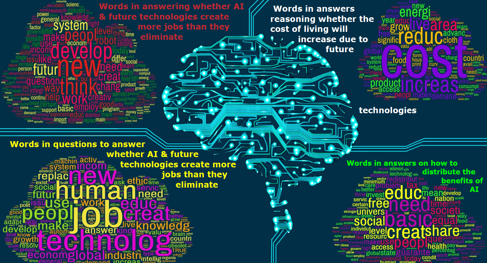

|
The Millennium Project (think tank) is a global foresight project that anticipates building a better future by improving humanity’s prospects. The Millennium Project assumes that the world needs to think seriously about these challenges now, because it may take a generation or more to make the changes necessary to improve our future prospects. To address this challenge, they launched a Future Work/Technology 2050 study with eight steps. Precisely, they created the Real-Time Delphi International Survey where well-versed professionals in their fields gave their opinions about diverse technologies and their impact in projected-view time periods and future impact on jobs. Participants responded to ten questions as part of ‘Future Work/Technology 2050 Real-Time Delphi Study’. We studied diverse opinions on technology impact and distributions with well-elaborated visualizations that give a clear view of how exactly these experts see the world 2020-2050 in regards to unemployment. |
| A Temporal analysis of future unemployment: this dashboard captures the outlook of experts’ viewpoint on unemployment changes from 2020-2050 by age group as well as their stated level of expertise.Survey respondents in all age groups expect to see a pronounced increase in unemployment from 2020 to 2050. Participants of low, medium, and high experience also foresee an increase in unemployment from 2020 to 2050. What is particularly interesting is that higher experience participants foresee a higher increase in employment as compared to medium and low experience participants. Also, Futurists see a higher unemployment in future than the Non-Futurists. |
|
|
| Geospatial visualization: presents the spread of average technological impact by country in the future on a world map. Across regions, all participants agree on the Robotics revolution in the coming years, according to the responders. Idem for analysis across different professions and different expertise levels regarding Robotics technology, same findings. The survey results indicate that Robotics will be increasingly and widely used in the future. Robotics is the most popular and promising technology of the future with the highest average impact of 7.51 and corroborates the client’s findings. |
 |
| A Topical Visualization: mapping occupational distribution of participant (As participants describe themselves as having other functions as well). Many survey participants cited more than one occupation. For example, respondents describing themselves as ‘Futurists’ also share other occupations and what the distributions are. Observations: weaker than expected participation of Economists, as one would expect from a survey on future unemployment. As expected, the occupation of ‘Futurist’ dominated the survey responses and was most commonly associated with ‘Engineer/Technologist’ and, perhaps, somewhat surprisingly, ‘Social Science’. |
 |
| A Word Cloud: analysis of recurring words from answers to questions 3.1, 3.2, 5.1 and 8.2 (Please find respective questions in index terms). Experts used words such as “human” “AI”, “new”, “technology”, “Jobs”, “Social”, and “National” more often. Overall, experts across the world were open to accept these future technologies in the belief that jobs will be created and people will be progressive. There are two additional word clouds, the first for question 5.1 - The main insight derived from the visualization is that people are considering issues such as demand for materials, consumption, food, and wealth created by technologies as important in deciding the impact on cost living. From the second additional word cloud on question 8.2, it can be understood that responders perceive that the benefits of AI must be distributed equally to
all classes in order to fulfill basic needs, such as education, food, and shelter. Second, words such as “redistribute”, ”share”, and ”equal”, reinstate that the distribution would initially cause a gap between the different levels in society and thus the wealth must be redistributed to all. The next levels benefits must be shared such that there is good infrastructure, access to resources, improved working conditions, pay, and health. Some of the key challenges are the direction to take from this information, and there are many avenues to further explore this data.
|
|  |
|
Priyanka Jha Indiana University prijha@iu.edu Julie Diby Indiana University jdiby@indiana.edu Ian Bass Indiana University ibass@indiana.edu Arthi Anand Indiana University arthanan@indiana.edu Archana Singh Indiana University arcsingh@iu.edu |
|
We would like to deeply thank our client Mr .Jerome Glenn, Director of ‘The Millennium Project’, Professor Katy Börner, Michael Ginda and Ashish Shendure of Indiana University for their prompt feedback and insights on preparing the project. |